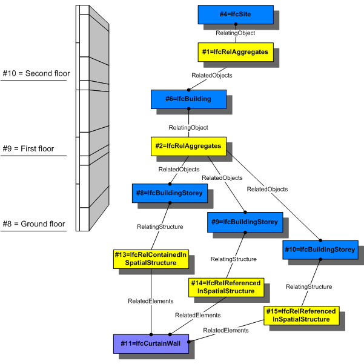

5.4.3.38 IfcRelReferencedInSpatialStructure
| Bezieht sich auf eine räumliche Struktur - Relation |
The objectified relationship,
IfcRelReferencedInSpatialStructure is used to
assign elements in addition to those levels of the project
spatial structure, in which they are referenced, but not
primarily contained.
NOTE The primary containment relationship between
an element and the spatial structure is handled
by IfcRelContainsInSpatialStructure.
Any element can be referenced to zero, one or several
levels of the spatial structure. Whereas the
IfcRelContainsInSpatialStructure relationship is
required to be hierarchical (an element can only be
contained in exactly one spatial structure element), the
IfcRelReferencedInSpatialStructure is not restricted
to be hierarchical.
EXAMPLE A wall might be normally contained within
a storey, and since it does not span through several
stories, it is not referenced in any additional storey.
However a curtain wall might span through several
stories, in this case it can be contained within the
ground floor, but it would be referenced by all
additional stories, it spans.
Predefined spatial structure elements to which elements can
be assigned are
Elements can also be references in a spatial zone that is provided as IfcSpatialZone.
The same element can be assigned to different spatial
structure elements depending on the context.
HISTORY New entity in IFC2x3.
Use Definition
Figure 132 shows the use of IfcRelContainedInSpatialStructure and IfcRelReferencedInSpatialStructure to assign an IfcCurtainWall to two different levels within the spatial structure. It is primarily contained within the ground floor, and additionally referenced within the first and second floor.

|
Figure 132 — Relationship for spatial structure referencing |
XSD Specification:
<xs:element name="IfcRelReferencedInSpatialStructure" type="ifc:IfcRelReferencedInSpatialStructure" substitutionGroup="ifc:IfcRelConnects" nillable="true"/>
<xs:complexType name="IfcRelReferencedInSpatialStructure">
<xs:complexContent>
<xs:extension base="ifc:IfcRelConnects">
<xs:sequence>
<xs:element name="RelatedElements">
<xs:complexType>
<xs:sequence>
<xs:element ref="ifc:IfcProduct" maxOccurs="unbounded"/>
</xs:sequence>
<xs:attribute ref="ifc:itemType" fixed="ifc:IfcProduct"/>
<xs:attribute ref="ifc:cType" fixed="set"/>
<xs:attribute ref="ifc:arraySize" use="optional"/>
</xs:complexType>
</xs:element>
<xs:element name="RelatingStructure" type="ifc:IfcSpatialElement" nillable="true"/>
</xs:sequence>
</xs:extension>
</xs:complexContent>
</xs:complexType>
EXPRESS Specification:
|
ENTITY IfcRelReferencedInSpatialStructure
|
|
|
| WR31 | : | SIZEOF(QUERY(temp <* RelatedElements | 'IFCPRODUCTEXTENSION.IFCSPATIALSTRUCTUREELEMENT' IN TYPEOF(temp))) = 0; |
|
 EXPRESS-G diagram
EXPRESS-G diagram
Attribute Definitions:
| RelatedElements | : |
Set of products, which are referenced within this level of the spatial structure hierarchy.
NOTE Referenced elements are contained elsewhere within the spatial structure, they are referenced additionally by this spatial structure element, e.g., because they span several stories.
|
| RelatingStructure | : |
Spatial structure element, within which the element is referenced. Any element can be contained within zero, one or many elements of the project spatial and zoning structure.
IFC4 CHANGE The attribute RelatingStructure as been promoted to the new supertype IfcSpatialElement with upward compatibility for file based exchange.
|
Formal Propositions:
| WR31 | : |
The relationship object shall not be used to include other spatial structure elements into a spatial structure element. The hierarchy of the spatial structure is defined using IfcRelAggregates.
|
Inheritance Graph:
|
ENTITY IfcRelReferencedInSpatialStructure
|
 Link to this page
Link to this page